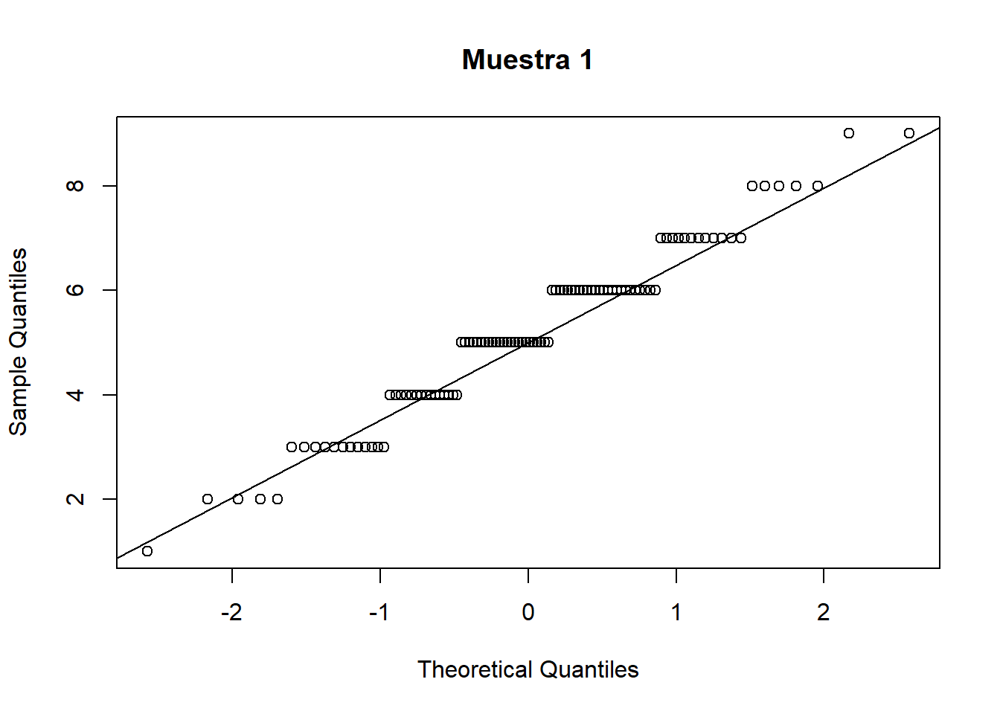
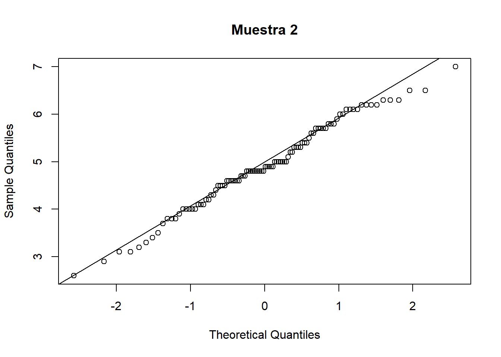
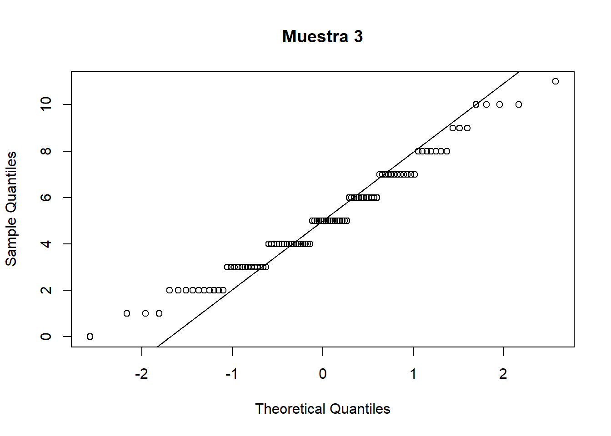

Todo experimento consiste en realizar una actividad y, en el curso de ella, medir “algo”. Si repetimos el experimento muchas veces vamos obteniendo una muestra de resultados. A este número de veces que se repite el experimento se le llama “tamaño muestral” porque, al fin y al cabo, es el tamaño de la muestra.
Para un experimento que se repite 100 veces, la muestra podría ser, quizás, una de estas:
m1_bin = rbinom(tamamu, size = 10, prob = 1/2)
m2_nor = rnorm(tamamu, mean = 5, sd = 1); m2_nor = round(m2_nor, 1);
m3_poi = rpois(tamamu, lambda = 5)
head(m1_bin, 10)## [1] 3 6 3 2 6 7 4 6 3 7head(m2_nor, 10)## [1] 4.4 4.3 4.8 4.9 5.1 5.4 5.0 4.8 6.2 5.8head(m3_poi, 10)## [1] 7 10 1 7 9 2 2 2 3 6La muestra se puede utilizar para estimar la “distribución” de la población dividiendo a ésta en clases de igual número de individuos y dando un valor mínimo y una valor máximo en cada clase, de manera creciente. Estos mínimos y máximos se llaman “cuantiles” y en R se obtienen con la función “quantile”. Los cuantiles de orden 4 o “cuartiles” de la primera muestra serían:
quantile(m1_bin, probs = seq(0, 1, by=1/4))## 0% 25% 50% 75% 100%
## 1 4 5 6 9#quantile(m2_nor, probs = seq(0, 1, by=1/4))
#quantile(m3_poi, probs = seq(0, 1, by=1/4))Entonces, a partir de la primera muestra estimamos que la población de la que se ha tomado tiene la siguiente distribución: un 25% de individuos que se mueve entre los valores 1 y 4; otro 25% se mueve entre 4 y 5; el siguiente 25% entre 5 y 6; y el restante 25% va de 6 a 9.
Mayor detalle de la distribución de la población dan los cuantiles de orden 10 o “deciles”, aún más detalle los cuantiles de orden 100 o “percentiles”, etc…
quantile(m1_bin, probs = seq(0, 1, by=1/10))## 0% 10% 20% 30% 40% 50% 60% 70% 80% 90% 100%
## 1 3 4 4 5 5 6 6 6 7 9quantile(m1_bin, probs = seq(0, 1, by=1/100))## 0% 1% 2% 3% 4% 5% 6% 7% 8% 9% 10% 11% 12% 13% 14% 15%
## 1.00 1.99 2.00 2.00 2.00 2.95 3.00 3.00 3.00 3.00 3.00 3.00 3.00 3.00 3.00 3.00
## 16% 17% 18% 19% 20% 21% 22% 23% 24% 25% 26% 27% 28% 29% 30% 31%
## 3.00 3.83 4.00 4.00 4.00 4.00 4.00 4.00 4.00 4.00 4.00 4.00 4.00 4.00 4.00 4.00
## 32% 33% 34% 35% 36% 37% 38% 39% 40% 41% 42% 43% 44% 45% 46% 47%
## 4.68 5.00 5.00 5.00 5.00 5.00 5.00 5.00 5.00 5.00 5.00 5.00 5.00 5.00 5.00 5.00
## 48% 49% 50% 51% 52% 53% 54% 55% 56% 57% 58% 59% 60% 61% 62% 63%
## 5.00 5.00 5.00 5.00 5.00 5.00 5.00 5.00 5.44 6.00 6.00 6.00 6.00 6.00 6.00 6.00
## 64% 65% 66% 67% 68% 69% 70% 71% 72% 73% 74% 75% 76% 77% 78% 79%
## 6.00 6.00 6.00 6.00 6.00 6.00 6.00 6.00 6.00 6.00 6.00 6.00 6.00 6.00 6.00 6.00
## 80% 81% 82% 83% 84% 85% 86% 87% 88% 89% 90% 91% 92% 93% 94% 95%
## 6.00 6.19 7.00 7.00 7.00 7.00 7.00 7.00 7.00 7.00 7.00 7.00 7.00 7.07 8.00 8.00
## 96% 97% 98% 99% 100%
## 8.00 8.00 8.02 9.00 9.00Existen distribuciones teóricas de las poblaciones muy estudiadas y resulta muy prometedor cuando la distribución estimada a partir de una muestra se ajusta “aproximadamente” a una de esas distribuciones teóricas.
La distribución de población, teórica, más importante es la “distribución normal” que en R se obtiene con la función “qnorm”.
Si comparamos los cuantiles de cada muestra con los cuantiles de la distribucion normal y son “parecidos” diremos que la muestra es “aproximadamente normal”. Pero a simple vista no es fácil decidirse sobre si hay parecido o no; ni siquiera en el caso de cuantiles de orden bajo:
orden = 10
q1 = quantile(m1_bin, probs = seq(0, 1, by=1/orden), names = FALSE)
t1 = round(qnorm(seq(0, 1, by=1/orden),
mean = mean(m1_bin), sd = sd(m1_bin)), 1)
q2 = quantile(m2_nor, probs = seq(0, 1, by=1/orden), names = FALSE)
t2 = round(qnorm(seq(0, 1, by=1/orden),
mean = mean(m2_nor), sd = sd(m2_nor)), 1)
q3 = quantile(m3_poi, probs = seq(0, 1, by=1/orden), names = FALSE)
t3 = round(qnorm(seq(0, 1, by=1/orden),
mean = mean(m3_poi), sd = sd(m3_poi)), 1)
data.frame(muestra_1= "", q1, t1, muestra_2 = "", q2, t2,
muestra_3 = "", q3, t3)## muestra_1 q1 t1 muestra_2 q2 t2 muestra_3 q3 t3
## 1 1 -Inf 2.60 -Inf 0 -Inf
## 2 3 3.1 3.80 3.8 2 2.0
## 3 4 3.8 4.10 4.2 3 3.1
## 4 4 4.3 4.57 4.4 4 3.8
## 5 5 4.8 4.76 4.7 4 4.4
## 6 5 5.2 4.85 4.9 5 5.0
## 7 6 5.6 5.00 5.1 5 5.6
## 8 6 6.0 5.40 5.4 6 6.3
## 9 6 6.5 5.72 5.7 7 7.0
## 10 7 7.3 6.11 6.1 8 8.0
## 11 9 Inf 7.00 Inf 11 InfEn cada muestra encontramos algún cuantil idéntico al teórico y alguno claramente diferente; con un poco más de experiencia podríamos notar que los cuantiles teóricos nunca se repiten y que sólo en la segunda muestra los cuantiles tienen esa propiedad, pero incluso notando esto no sabríamos si darlo por definitivo o no.
Necesitamos, en definitiva, alguna herramienta más práctica para decidirnos a opinar sobre si alguna de las muestras es aproximadamente normal o no.
Las funciones “qqplot” y “qqline” (siempre se utilizan juntas) muestras los cuantiles de la muestra junto con un línea diagonal que representa los cuantiles téoricos. Los cuantiles que tocan la diagonal coinciden con los teóricos y, en general, cuando la diagonal parece ejercer una clara “atracción” sobre los cuantiles de la muestra diremos que esta es aproximadamente normal.
qqnorm(m1_bin, main="Muestra 1")
qqline(m1_bin)
qqnorm(m2_nor, main="Muestra 2")
qqline(m2_nor)
qqnorm(m3_poi, main="Muestra 3")
qqline(m3_poi) En el “qqplot” de las muestras 1 y 3 vemos una especie de “nubes de cuantiles” que tocan la diagonal en algún momento pero, en general, no se desvían hacia ella. En cambio, los cuantiles de la muestra 2 sí que parecen sentirse “atraídos” por la diagonal, subiendo y bajando de ella ligera pero contínuamente. Concluimos que sólo la muestra 2 parece aproximadamente normal.
Como complemento a esta técnica gráfica tenemos una prueba puramente numérica: la prueba de Shapiro-Wilk que en R se realiza con la función “shapiro.test”. Esta prueba devuelve una probabilidad o “p-valor”, entre 0 y 1, que se interpreta como la admisibilidad de que la muestra sea aproximadamente normal. Se suele requerir un p-valor superior a 0.05, es decir, una admisibilidad de más del 5%:
round( shapiro.test(x = m1_bin)$p.value ,2)## [1] 0.01round( shapiro.test(x = m2_nor)$p.value ,2)## [1] 0.36round( shapiro.test(x = m3_poi)$p.value ,2)## [1] 0.03La muestra 1 tiene un p-valor de 0.01 (admisibilidad de la hipótesis de normalidad de un 1%); la muestra 3 tiene un p-valor de 0.03 (admisibilidad del 3%). Entonces, descartamos la hipótesis de que estas muestras pueden venir de una población aproximadamente normal.
En cambio, la muestra 2 tiene un p-valor superior a 0.05: el p-valor es de 0.36 (admisibilidad del 36%). Entonces, es admisible pensar que la muestra 2 ha sido tomada de una población aproximadamente normal.
Se suele recomendar que no nos limitemos a la prueba grafica (qqplot) o a la prueba numérica (shapiro) sino que hagamos las dos y sólo tomemos una decisión si ambas pruebas están de acuerdo, como en estas tres muestras que hemos utilizado.